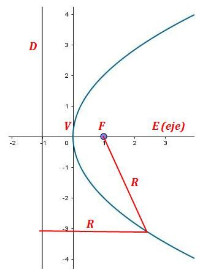
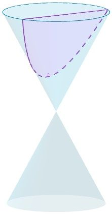
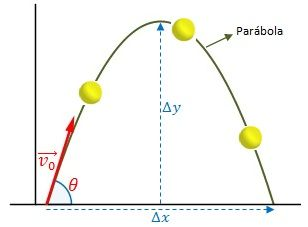
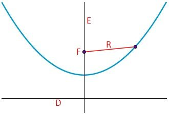
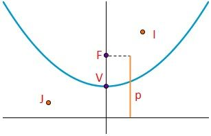
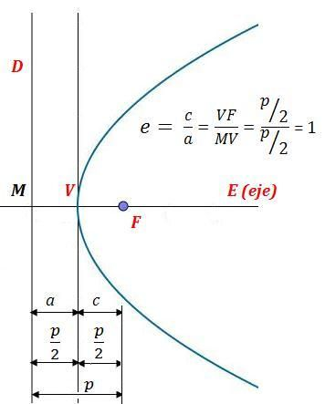
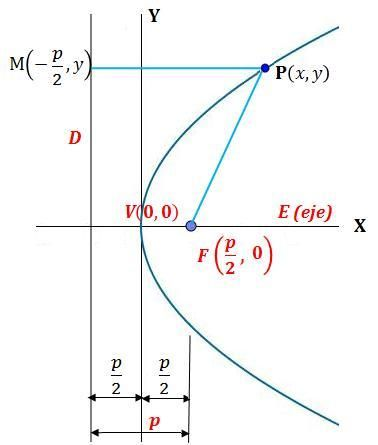
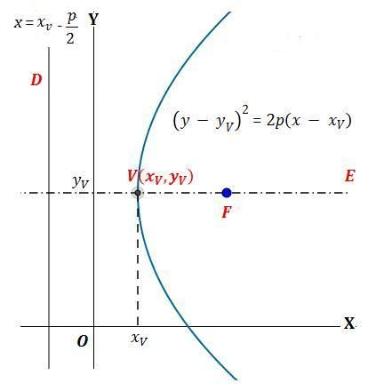
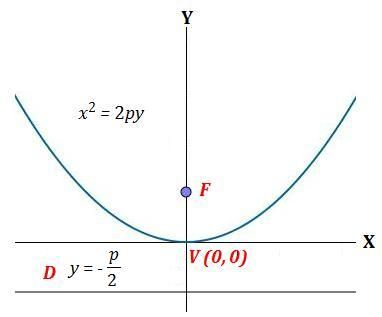
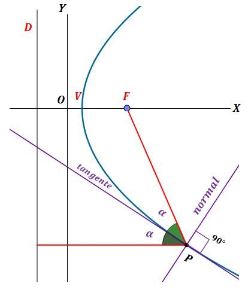

ParÁbola

Una parábola es el lugar geométrico de los puntos del plano que equidistan de un punto fijo, llamado foco y de una recta fija del mismo plano llamada directriz.

La parábola es una sección cónica, resultado de la intersección de un cono recto con un plano que corta a la base del mismo, oblicuo a su eje y paralelo a una generatriz g de la superficie cónica.
El foco y la directriz determinan cómo va a ser la apariencia de la parábola (en el sentido de que “parecerá” más o menos abierta según sea la distancia entre F y la directriz). Todas las parábolas son semejantes. Su excentricidad es 1 en todos los casos. Solamente varía la escala.

Una de las aplicaciones físicas más importantes de la parábola es el movimiento parabólico. Este movimiento se caracteriza porque una partícula o cuerpo sólido lanzado en un campo gravitatorio recorre una trayectoria parabólica.
Una aplicación práctica de la parábola son las antenas parabólicas, en las que todas las rectas paralelas al eje de la parábola se reflejan en el foco de la misma. (Empleado en óptica, antenas de transmisión de radiofrecuencia, estufas domésticas parabólicas, captación de energía solar, etc.)
Elementos de una parábola
Los elementos de la parábola son:

- Foco: el foco F es el punto fijo. Los puntos de la parábola equidistan del foco y la directriz.
- Directriz: es la recta fija D. Los puntos de la parábola equidistan de la directriz y el foco.
- Radio vector: es el segmento R que une el foco con cada uno de los puntos de la parábola. Es igual al segmento perpendicular a la directriz desde el punto correspondiente.
- Eje: es la recta E perpendicular a la directriz que pasa por el foco y el vértice. Es el eje de simetría de la parábola.

- Parámetro: es el vector p, que va desde el foco al punto más próximo de la directriz.
Es importante el signo del parámetro. En las parábolas verticales, cuando el parámetro es positivo la parábola se abre hacia arriba. Cuando p es negativo, la parábola se abre hacia abajo. Igualmente, en las parábolas horizontales, cuando p es positivo, se abre hacia la derecha y cuando p es negativo, la parábola se abre a la izquierda.
- Vértice: es el punto V de la intersección del eje y la parábola.
- Distancia focal: distancia entre el foco F y el vértice V. Es igual a p/2.
- Puntos interiores y exteriores: la parábola divide el plano en dos regiones. Los puntos que están en la región del foco se llaman puntos interiores (I), mientras que los otros son los exteriores (J).
- Cuerda: segmento que une dos puntos cualesquiera de la parábola.
- Cuerda focal: una cuerda que pasa por el foco F.
- Lado recto: Cuerda focal paralela a la directriz D y, por tanto, perpendicular al eje E. Su longitud es dos veces el parámetro (2p, pues se ven en la figura dos cuadrados unidos iguales de lado p).

Excentricidad de la parábola

La parábola es la única de las cónicas cuya excentricidad es siempre 1.
Veamos la figura.
Por la misma definición de parábola, su excentricidad siempre es la unidad. De esto deriva que todas las parábolas sean semejantes, variando su apariencia de cerradas o abiertas, según la escala.
Ecuación de la parábola
La ecuación de la parábola depende de si el eje es vertical u horizontal. Si el eje es vertical, la y será la variable dependiente. Si el eje es horizontal, será x la variable dependiente.
Ecuación canónica o reducida de la parábola

Consideremos una parábola cuyo eje es el eje de ordenadas, su vértice es el centro de coordenadas V (0, 0) y que está en la parte positiva de las x. En este caso, el foco estará necesariamente en F (p/2,0) . La ecuación de la recta directriz D será x = –p/2.
Los radios vectores FP y PM, correspondientes a cualquier punto P de la parábola (que, por definición, son iguales) tendrán la longitud:

Operando y simplificando, obtenemos la ecuación canónica o reducida de la parábola referida a esta configuración:

Si se desplaza paralelamente el eje E al eje de ordenadas y el vértice de la parábola se lleva al punto V (xV,yV), la ecuación de esta parábola ahora será la que se muestra en la imagen. También se muestra la ecuación de la recta directriz D.
Ecuación canónica o reducida de la parábola, pero ahora con su eje coincidente con el eje de las abscisas, su vértice es el centro de coordenadas V (0,0) y que está en la parte positiva de las y.

Si se desplaza paralelamente el eje E al eje de las abscisas y el vértice de la parábola se lleva al punto V (xV,yV), la ecuación de esta parábola ahora será la que se muestra en la imagen.

Análogamente, vemos las expresiones de la ecuación canónica o reducida para las parábolas con ejes coincidentes con el eje de ordenadas o con el eje de abscisas, siempre con el vértice en el origen O (0,0), pero ahora con valores negativos de las x y de las y respectivamente. Se muestra en las dos imágenes siguientes:

Y la segunda:

Otras ecuaciones de la parábola
La ecuación de la parábola con vértice V (xV,yV) y el eje vertical paralelo al eje OY es:

En la que las constantes tienen el siguiente valor:

Donde a ≠ 0 y b y c son números reales.
Lo vemos en la imagen:

La constante a indica lo “abierta” que es la parábola. Cuando el valor de a es menor, la parábola aparecerá más abierta. Dicho de otra manera, la parábola aparecerá más abierta cuando el parámetro p sea mayor. Si la constante a es positiva, el vértice V será el mínimo de la parábola, es decir, se abre hacia arriba. Si la constante a es negativa, el vértice V será máximo de la parábola, o sea, que se abre hacia abajo.

La ecuación de la parábola con vértice V (xV,yV) y el eje horizontal paralelo al eje OX es:

En la que las constantes tienen el siguiente valor:

La constante a indica lo “abierta” que es la parábola. Cuando el valor de a es menor, la parábola aparecerá más abierta. Dicho de otra manera, la parábola aparecerá más abierta cuando el parámetro p sea mayor. Si la constante a es positiva, la parábola se abre hacia la derecha. Si la constante a es negativa, la parábola se abre hacia la izquierda.

Ecuación general de la parábola
Los casos anteriores donde el eje es vertical u horizontal, son casos particulares de la ecuación general de la parábola.

Veamos casos de parábolas en los que sus ejes no son verticales ni horizontales. Es el caso de la parábola inclinada o parábola oblicua.

En estos cuatro casos su ecuación tiene todos los términos de la ecuación general de la parábola.
Se puede comprobar que en las cuatro parábolas se cumplen las dos condiciones de la ecuación general de la parábola, es decir que B2 – 4AC = 0 y que A y C no son nulos al mismo tiempo.
Raíces de una parábola
Las raíces de una parábola vertical de ecuación son los puntos de la misma de ordenada nula (y = 0), es decir, allí donde la parábola corta al eje de ordenadas OX.
Una parábola vertical puede tener dos raíces, una o ninguna.
Como en el corte con OX, y = 0, los puntos de cortes serán las raíces de una ecuación de segundo grado:
Cuyas raíces se hallan por la fórmula:

Donde el binomio que se halla dentro de la raíz cuadrada es el que determina el número de raíces de la parábola.

Los tres casos y la aplicación del criterio se ilustra en estas tres parábolas:

Así, en el caso de dos raíces, podemos hacer este desarrollo:

Por el punto medio de las dos raíces pasará el eje de la parábola, su eje de simetría. El resultado coincide con el hallado para ordenada del vértice de una parábola vertical.
Si la parábola vertical tuviese una raíz, la ordenada del vértice será el valor de la misma raíz y, por tanto, la ecuación del eje de la parábola:
A partir de aquí, la ecuación de la parábola vertical se puede expresar también así:
La parábola vertical cortará al eje OY cuando la ordenada sea nula, cuando x = 0.

Vértice de una parábola
El vértice de una parábola vertical V es el punto donde la parábola corta a su eje.
La ecuación de la parábola vertical se puede expresar de estas dos formas:

Desarrollando el cuadrado del segundo binomio:

De donde obtenemos el coeficiente b y, a partir de él, la ordenada del vértice xV:

Sustituyendo la expresión de la ordenada del vértice xV en la ecuación anterior, desarrollando y simplificando con el común denominador 4a, obtenemos:

El resultado lo vemos en la imagen:

Tangente a la parábola

Las rectas tangente y normal a cualquier punto P de una parábola son las bisectrices de los ángulos formados por los radios vectores correspondientes a ese punto. De las dos bisectrices, hay que tener en cuenta cuál es la tangente y cuál la normal.
Las dos tangentes que pasan por los extremos del lado recto son perpendiculares entre sí y se cortan en la intersección de la directriz con el eje. Con este último forman dos ángulos de 45°.

Ejercicios resueltos
Ejercicio 1
Hallar la ecuación de la parábola cuyo eje es paralelo al eje de las abscisas OY, que pasa por el punto P (4,0) y su vértice está en V (2,-1).
Hacer su representación gráfica.
Solución:
Como el eje de la parábola E es paralelo al eje OY, la ecuación de la parábola será del tipo:
Sustituyendo las coordenadas del vértice en la ecuación:
Sabemos que la parábola pasa por P (4,0), luego:

Ésta es la ecuación buscada. Como la ordenada del vértice es 2, la ecuación del eje de la parábola, paralelo a OY será x = 2.
Finalmente, como hemos averiguado el parámetro p = 2, la recta directriz, que es perpendicular al eje E y paralelo al eje de ordenadas OX, estará a p/2 del vértice, luego su ecuación será y = -1 –p/2 = -2.
El resultado del ejercicio lo vemos en la imagen:

Ejercicio 2
La ecuación de una parábola es y2 = 6x -3. ¿Cuáles serán las ecuaciones de las rectas tangente y normal de ordenada en un punto P de la parábola x = 6,5 y abscisa positiva?

Solución:
Las abscisas de ordenada 6 serán:

Tomaremos +6, pues la abscisa tiene que ser positiva, según el enunciado.
Por tanto, las coordenadas del punto de tangencia serán: P (6,5, 6).
La ecuación de la parábola de este ejercicio se puede transformar en:

Recordemos que es una parábola horizontal, cuya ecuación general es:
En la que las constantes tienen el siguiente valor:

El parámetro p se puede hallar por la fórmula del coeficiente a de la variable al cuadrado de una parábola:

La abscisa yV del vértice V es la siguiente:

La ordenada xV del vértice V es la siguiente:

Las coordenadas del vértice serán: V (1,5 , 0).
Como la abscisa del vértice yV = 0, el eje E y el foco F están sobre el eje OX.
Por lo tanto, las coordenadas del foco F serán:

Y las coordenadas del foco F (2, 0).
La recta del radio vector FP la obtenemos por la fórmula de la recta que pasa por dos puntos:

La ecuación de la recta perpendicular a la directriz D desde el punto P es x = 6.
Con las ecuaciones de los radios vectores, podemos aplicar la ecuación de la bisectriz, que será las ecuaciones de la tangente y la normal a la parábola del ejercicio en el punto P (6,5 , 6).

Como la tangente tiene pendiente positiva, se emplea el signo positivo “+”.

La recta normal en P tiene pendiente negativa, por lo que se emplea el signo “-“.

El resultado aparece en esta imagen.

Ejercicio 3
Hallar la ecuación de una parábola vertical abierta hacia arriba, sabiendo que las coordenadas de su vértice son V (2,-1) y la de uno de sus puntos P (-2,3).

Solución:
Si la parábola es abierta hacia arriba, sabemos que su vértice es el mínimo de esta parábola.
Además, si la parábola es vertical, su ecuación se puede escribir de la forma:
Para que un punto de una función sea un máximo o un mínimo, debe cumplirse que su derivada sea nula. La derivamos y la igualamos a cero:
Asignándole las coordenadas del vértice, que es un mínimo de la parábola, a la derivada:

Despejamos b:
Vamos a sustituir los valores de las coordenadas de los dos puntos conocidos, V (2,-1) y P (-2,3) en la ecuación (Ec 1):

Operando:

Sustituimos b de la (Ec 2) en las ecuaciones (Ec 3) y (Ec 4).

De estas dos últimas ecuaciones, restamos miembro a miembro la segunda de la primera:

Sustituimos el valor hallado de a en la (Ec 2):

Y, por fin, los valores de a y b:

Asignamos el valor de las constantes a, b y c a (Ec 1) y tenemos la ecuación de la parábola que buscábamos.


Ejercicio 4
Conocemos de una parábola dos puntos, M (-4,-8) y N (8,-8) y su parámetro p = -2. Hallar las coordenadas de su vértice y la ecuación de la parábola.
Solución:
Como yM = yN = -8, se trata de una parábola de eje vertical.
El parámetro es negativo, por lo que se trata de una parábola abierta hacia abajo, como se ve en la figura:

La ecuación de la parábola vertical es:
Sustituimos en esta ecuación (Ec 1) sucesivamente las coordenadas de M y N:
Y, ahora, las coordenadas de N:
Como los dos segundos términos son iguales, igualamos los primeros términos de las dos ecuaciones (Ec 2) y (Ec 3):

Sustituimos este valor en cualquiera de las dos ecuaciones anteriores, por ejemplo en(Ec 4):

Las coordenadas del vértice son: V(2, 1).
Sustituimos las coordenadas del vértice halladas en la ecuación (Ec 1).

Que es la ecuación buscada de la parábola.